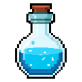
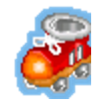
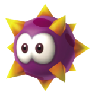
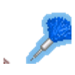

全 3D 炸彈人 · 放炸彈炸開磚塊與對手 · 撿道具：

火力 彈數
加速 踢彈
穿透 遙控
護盾選擇模式
先選玩法，再開始遊戲
線上對戰
建立房間把代號給朋友，或輸入朋友的代號加入
連線透過你自己的 Cloudflare Worker（
建立房間者為主機（綠色玩家），跑遊戲模擬；加入者為客機（橘色玩家）。
pingl-signal）以 WebSocket 中轉，連得到就一定通。建立房間者為主機（綠色玩家），跑遊戲模擬；加入者為客機（橘色玩家）。
純前端 · Three.js WebGL 3D 渲染 · 連線複用 pingl-signal worker
載入 3D 場景…